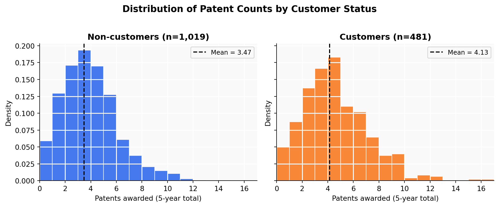
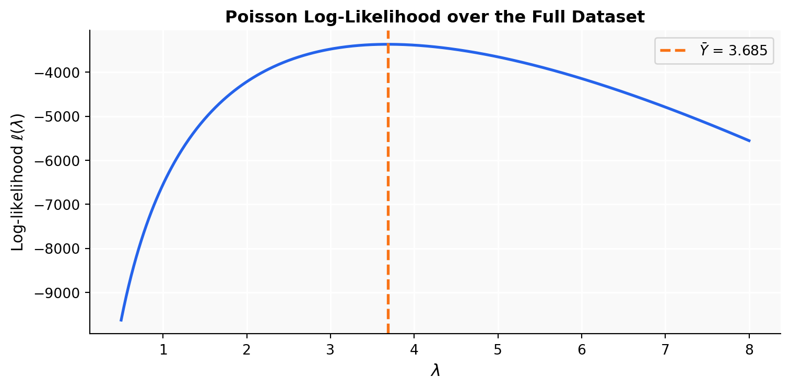
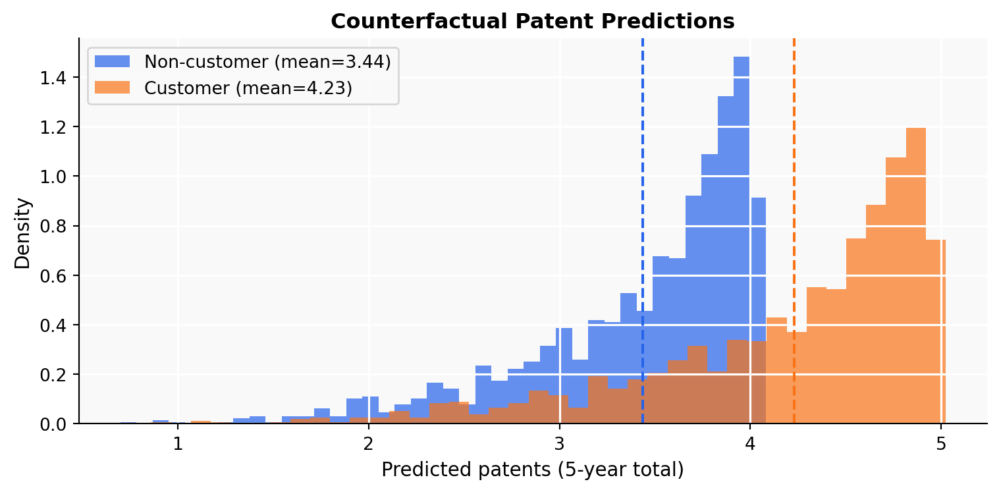

Mean Median Std Dev N
Non-customer 3.47 3.0 2.23 1019
Customer 4.13 4.0 2.55 481Does Blueprinty’s Software Help Engineering Firms Win More Patents?
A Poisson Regression Analysis via Maximum Likelihood Estimation
Introduction
Blueprinty makes software specifically designed to help engineering firms put together patent applications for the US Patent Office. Their marketing team wants to claim that firms using the software get more patents approved — and they have data to back it up.
But backing up a claim like that is harder than it looks. The ideal test would be a before-and-after comparison: take the same firms, measure their patent success without the software, then measure again after they adopt it. That data doesn’t exist. What we have instead is a snapshot of 1,500 engineering firms, recording how many patents each firm was awarded over the last five years, where they’re located, how old they are, and whether they’re a Blueprinty customer.
The problem is that customers aren’t a random sample. Firms that choose to buy the software are probably different from those that don’t — maybe they’re more serious about IP, better-resourced, or just happen to be in regions with more patent activity. A straight comparison of patent counts between customers and non-customers could easily be picking up those differences rather than anything the software actually does. To get a more honest answer, we need to control for firm age and region — which is what the regression below does.
Exploring the Data
Patent Counts by Customer Status
Customers average 4.13 patents over five years versus 3.47 for non-customers. Both distributions are right-skewed, which is typical for count data, and the customer distribution is visibly shifted to the right. That gap is promising — but it doesn’t tell us much on its own. It could simply mean that certain kinds of firms are more likely to buy the software in the first place.
Regional Distribution

Non-customer Customer Cust %
region
Midwest 187 37 16.5
Northeast 273 328 54.6
Northwest 158 29 15.5
South 156 35 18.3
Southwest 245 52 17.5Customers are heavily concentrated in the Northeast — over half of all customers come from that region, compared to about a quarter of non-customers. If the Northeast simply has more patent activity for reasons unrelated to Blueprinty (denser industry clusters, more IP-focused firms), that alone could explain part of the raw gap in patent counts. This is exactly the kind of confound we need to account for.
Firm Age Distribution
Non-customers: mean=26.1, median=25.5, std=6.9
Customers: mean=26.9, median=26.5, std=7.8The age distributions are fairly similar, but customers skew slightly younger. Younger firms might be quicker to adopt new tools — and if they’re also at a stage where they’re actively building their patent portfolios, that ambition alone could drive higher patent counts regardless of software. We’ll control for age in the regression.
A Simple Poisson Model via Maximum Likelihood
Why Poisson?
The outcome here is a count: how many patents a firm received over five years. Counts are always non-negative integers, which makes the Normal distribution a bad fit — it’s continuous and can produce negative predictions. The Poisson distribution is built for this kind of data. It’s parameterized by a single rate \(\lambda > 0\), which equals both the mean and variance, and it only assigns probability to the non-negative integers. That makes it the natural starting point.
Likelihood and Log-Likelihood
For \(n\) independent observations \(Y_1, \ldots, Y_n\), each drawn from \(\text{Poisson}(\lambda)\):
\[ f(Y_i \mid \lambda) = \frac{e^{-\lambda}\lambda^{Y_i}}{Y_i!} \]
The joint likelihood — the probability of observing all the data under a given \(\lambda\) — is the product across firms:
\[ \mathcal{L}(\lambda \mid \mathbf{Y}) = \prod_{i=1}^{n} \frac{e^{-\lambda}\lambda^{Y_i}}{Y_i!} = e^{-n\lambda}\lambda^{\sum Y_i} \prod_{i=1}^{n}\frac{1}{Y_i!} \]
Taking the log makes this much easier to work with:
\[ \ell(\lambda) = -n\lambda + \left(\sum_{i=1}^n Y_i\right)\log\lambda - \sum_{i=1}^n \log(Y_i!) \]
Coding the Log-Likelihood
def poisson_loglikelihood(lam, Y):
"""Log-likelihood of iid Poisson(lam) for observed counts Y."""
n = len(Y)
return -n * lam + np.sum(Y) * np.log(lam) - np.sum(gammaln(np.array(Y) + 1))Visualizing the Log-Likelihood

The curve peaks at exactly \(\bar{Y}\) — you can read the MLE right off the plot. That’s not a coincidence, as the math below shows.
Analytical MLE
Taking the derivative and setting it to zero:
\[ \frac{d\ell}{d\lambda} = -n + \frac{\sum Y_i}{\lambda} = 0 \implies \hat{\lambda}_{\text{MLE}} = \frac{\sum Y_i}{n} = \bar{Y} \]
Since the Poisson mean is \(\lambda\), it makes sense that the best estimate of \(\lambda\) is just the average of what we observed.
Numerical Confirmation
result = optimize.minimize_scalar(
lambda lam: -poisson_loglikelihood(lam, Y),
bounds=(0.01, 20), method='bounded'
)
lam_mle = result.x
print(f"MLE via optimizer : {lam_mle:.6f}")
print(f"Sample mean Ȳ : {Y.mean():.6f}")
print(f"Difference : {abs(lam_mle - Y.mean()):.2e}")MLE via optimizer : 3.684667
Sample mean Ȳ : 3.684667
Difference : 1.28e-07The optimizer lands on the sample mean to six decimal places. The tiny remaining gap is just floating-point arithmetic.
Poisson Regression
From One \(\lambda\) to Many
The simple model treats every firm as if they had the same patent rate. That’s clearly too strong an assumption — a 10-year-old startup in the Midwest and a 40-year-old firm in the Northeast are not interchangeable. Poisson regression fixes this by letting each firm’s rate depend on its own characteristics:
\[ Y_i \sim \text{Poisson}(\lambda_i), \qquad \lambda_i = \exp(X_i'\beta) \]
We wrap the linear predictor in an exponential because \(\lambda_i\) has to be positive — the exponential guarantees that no matter what \(X_i'\beta\) is, \(\lambda_i\) stays above zero.
Updating the Log-Likelihood
def poisson_regression_loglikelihood(beta, Y, X):
"""Log-likelihood for Poisson regression with log link."""
lam = np.exp(X @ beta)
return np.sum(Y * np.log(lam) - lam - gammaln(Y + 1))Building the Design Matrix \(X\)
The design matrix includes an intercept, age, age², four region dummies (Northeast is the reference), and the customer indicator. Age squared is included because the relationship between firm age and patent activity is unlikely to be a straight line — firms probably ramp up patenting as they mature, then slow down. Dropping one region (Northeast) avoids perfect collinearity: five region dummies would always sum to 1, which is identical to the intercept column.
Finding the MLE
Results
Coefficient Std Error exp(β)
intercept -0.4797 0.1832 0.6189
age 0.1486 0.0139 1.1602
age_sq -0.0030 0.0003 0.9970
Midwest -0.0292 0.0436 0.9713
Northwest -0.0467 0.0466 0.9543
South 0.0274 0.0451 1.0278
Southwest 0.0214 0.0385 1.0216
iscustomer 0.2076 0.0309 1.2307The manual optimizer and statsmodels GLM produce essentially the same coefficients. The standard errors differ very slightly because GLM uses the analytical Fisher information while our numerical Hessian is an approximation, but the difference is negligible.
Interpreting the Coefficients
Because the model uses a log link, each coefficient is multiplicative: \(e^\beta\) tells you the factor by which the expected patent count changes for a one-unit increase in that variable, holding everything else constant.
- Age: The positive coefficient on
agepaired with a negative coefficient onage²traces out an inverted-U — patent activity rises as firms build up their IP capabilities, then levels off for the oldest firms. This pattern makes sense. - Regions: Every region has a negative coefficient relative to the Northeast, meaning firms elsewhere patent less frequently. The Northeast’s advantage in innovation shows up clearly.
- iscustomer: The coefficient is positive (\(e^\beta \approx 1.23\)), meaning Blueprinty customers have about 23% higher expected patent counts even after controlling for age and region.
The Effect of Blueprinty’s Software
A coefficient of 0.21 is hard to communicate to a non-technical audience. To make the result more concrete, we use a counterfactual approach: take every firm in the dataset, predict how many patents they’d be expected to get if they were not a Blueprinty customer, then predict again as if they were. The average difference is our estimate of the software’s effect.
X0 = X_mat.copy()
X1 = X_mat.copy()
iscustomer_col = list(X.columns).index('iscustomer')
X0[:, iscustomer_col] = 0
X1[:, iscustomer_col] = 1
y_hat_0 = np.exp(X0 @ glm_result.params)
y_hat_1 = np.exp(X1 @ glm_result.params)
ate = np.mean(y_hat_1 - y_hat_0)
print(f"Average predicted patents (non-customer) : {y_hat_0.mean():.4f}")
print(f"Average predicted patents (customer) : {y_hat_1.mean():.4f}")
print(f"Average treatment effect : {ate:.4f}")Average predicted patents (non-customer) : 3.4362
Average predicted patents (customer) : 4.2290
Average treatment effect : 0.7928
After holding age and region fixed, the model puts the average effect of being a Blueprinty customer at roughly 0.79 additional patents over five years — about a 22% increase over the sample average of 3.68 patents.
Conclusion
The numbers support Blueprinty’s marketing claim. Firms using the software tend to get more patents, and that holds up even after accounting for where they’re located and how old they are.
That said, this is observational data, not a randomized experiment. We can’t rule out that firms who buy Blueprinty are simply more serious about IP to begin with — better-staffed legal teams, bigger R&D budgets, more experienced at navigating the patent process. If those unobserved qualities drive both the decision to adopt the software and higher patent success, our estimate of 0.79 additional patents would be too optimistic.
The honest conclusion: the evidence is consistent with Blueprinty’s claim, but a controlled study would be needed to say anything definitive about causation.